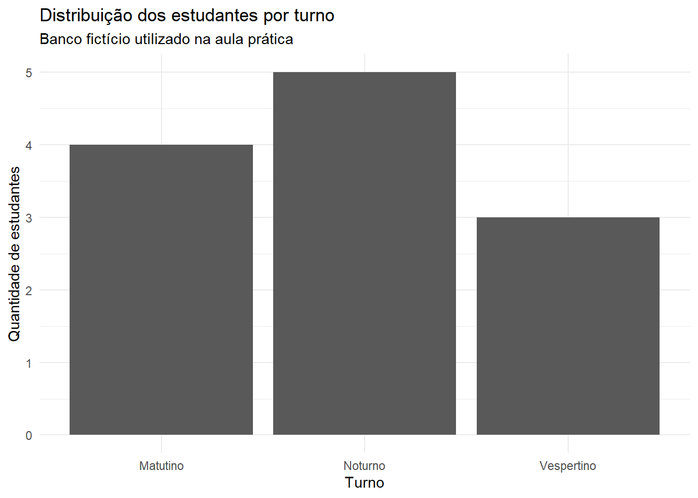

Código
2 + 3[1] 5Neste capítulo, você não precisa memorizar todos os comandos. O objetivo é compreender como organizar um trabalho reprodutível, executar instruções no R, importar dados, reconhecer a estrutura de uma planilha e produzir um pequeno documento em Quarto.
Ao final deste capítulo, espera-se que o estudante seja capaz de:
Uma analogia útil:
Antes de programar, organize o trabalho. Uma estrutura simples é:
AED/
├── dados/
├── figuras/
├── relatorios/
├── scripts/
└── capitulos_1_2.qmddados/: arquivos originais e bancos preparados;figuras/: imagens exportadas;relatorios/: versões finais dos documentos;scripts/: códigos auxiliares;.qmd: texto, código e resultados da análise.Projetos com arquivos em Downloads, Área de Trabalho, pendrive e serviços de nuvem ao mesmo tempo tendem a produzir caminhos quebrados, duplicidades e versões conflitantes.
No RStudio:
AED;O projeto ajuda a manter caminhos relativos. Em vez de escrever um caminho específico de um computador, como:
C:/Users/Nome/Documents/AED/dados/estudantes.csvpodemos usar:
dados/estudantes.csvIsso facilita a transferência do projeto entre computadores.
| Área | Função principal |
|---|---|
| Source | Escrever e editar scripts e documentos |
| Console | Executar comandos e exibir mensagens |
| Environment | Mostrar objetos existentes na sessão |
| Files | Navegar pelos arquivos do projeto |
| Plots | Exibir gráficos |
| Packages | Gerenciar pacotes |
| Help | Consultar documentação |
| Viewer | Exibir páginas, relatórios e aplicações |
Use o console para testes rápidos. Registre no script ou no arquivo Quarto todo comando necessário para reproduzir a análise.
Uma expressão pode ser executada diretamente.
2 + 3[1] 5O operador <- é utilizado para atribuir um valor a um objeto.
numero_de_estudantes <- 35
numero_de_estudantes[1] 35O objeto fica disponível na sessão.
numero_de_estudantes * 2[1] 70Prefira nomes informativos:
media_da_turma <- 7.4
taxa_de_aprovacao <- 0.82Evite nomes pouco explicativos:
# Evite quando o significado não estiver claro
x <- 7.4
y <- 0.82Uma convenção útil é snake_case, com palavras separadas por sublinhados.
Uma função executa uma tarefa. Os valores fornecidos à função são chamados argumentos.
notas <- c(7.5, 6.0, 8.2, 9.0, 5.8)
mean(notas)[1] 7.3Na expressão anterior:
mean é a função;notas é o argumento;Outras funções básicas:
length(notas)[1] 5min(notas)[1] 5.8max(notas)[1] 9sum(notas)[1] 36.5sort(notas)[1] 5.8 6.0 7.5 8.2 9.0mean(notas) pode ser lido como “calcule a média de notas”. Essa prática ajuda a compreender códigos novos.
O R possui documentação integrada.
?mean
help(mean)
help("mean")Para pesquisar uma palavra na documentação:
help.search("median")Para visualizar exemplos de uso:
example(mean)Ao consultar a ajuda, procure:
Pacotes ampliam as funcionalidades do R.
A instalação é feita normalmente uma única vez em cada computador.
install.packages(c(
"tidyverse",
"readxl",
"writexl",
"janitor"
))O carregamento deve ser feito em cada nova sessão.
library(tidyverse)
library(readxl)
library(janitor)install.packages() obtém o pacote e o instala no computador. library() disponibiliza suas funções na sessão atual.
Um vetor reúne valores do mesmo tipo.
nomes <- c("Ana", "Bruno", "Carla", "Diego", "Elisa")
idades <- c(18, 20, 19, 23, 21)
turnos <- c("Noturno", "Matutino", "Noturno", "Vespertino", "Matutino")
aprovado <- c(TRUE, TRUE, FALSE, TRUE, TRUE)Podemos inspecionar os objetos:
nomes[1] "Ana" "Bruno" "Carla" "Diego" "Elisa"idades[1] 18 20 19 23 21turnos[1] "Noturno" "Matutino" "Noturno" "Vespertino" "Matutino" aprovado[1] TRUE TRUE FALSE TRUE TRUETipos básicos:
class(nomes)[1] "character"class(idades)[1] "numeric"class(aprovado)[1] "logical"O banco abaixo é fictício e será usado apenas para aprendizagem.
estudantes <- tibble(
id = 1:12,
nome = c(
"Ana", "Bruno", "Carla", "Diego", "Elisa", "Felipe",
"Gabriela", "Hugo", "Iara", "João", "Kátia", "Lucas"
),
turno = c(
"Noturno", "Matutino", "Noturno", "Vespertino",
"Matutino", "Noturno", "Vespertino", "Noturno",
"Matutino", "Vespertino", "Noturno", "Matutino"
),
idade = c(18, 20, 19, 23, 21, 25, 20, 22, 19, 24, 21, 18),
meio_transporte = c(
"Ônibus", "Carro", "Ônibus", "Motocicleta",
"Ônibus", "Ônibus", "Carro", "Bicicleta",
"Ônibus", "Motocicleta", "Ônibus", "A pé"
),
tempo_deslocamento_min = c(55, 25, 70, 35, 60, 80, 30, 20, 65, 40, 50, 15),
horas_estudo_semana = c(8, 12, 6, 10, 9, 5, 14, 7, 11, 8, 6, 13),
nivel_satisfacao = c(
"Satisfeito", "Muito satisfeito", "Neutro", "Satisfeito",
"Neutro", "Insatisfeito", "Muito satisfeito", "Satisfeito",
"Satisfeito", "Neutro", "Insatisfeito", "Muito satisfeito"
)
)
estudantes# A tibble: 12 × 8
id nome turno idade meio_transporte tempo_deslocamento_min
<int> <chr> <chr> <dbl> <chr> <dbl>
1 1 Ana Noturno 18 Ônibus 55
2 2 Bruno Matutino 20 Carro 25
3 3 Carla Noturno 19 Ônibus 70
4 4 Diego Vespertino 23 Motocicleta 35
5 5 Elisa Matutino 21 Ônibus 60
6 6 Felipe Noturno 25 Ônibus 80
7 7 Gabriela Vespertino 20 Carro 30
8 8 Hugo Noturno 22 Bicicleta 20
9 9 Iara Matutino 19 Ônibus 65
10 10 João Vespertino 24 Motocicleta 40
11 11 Kátia Noturno 21 Ônibus 50
12 12 Lucas Matutino 18 A pé 15
# ℹ 2 more variables: horas_estudo_semana <dbl>, nivel_satisfacao <chr>nrow(estudantes)[1] 12ncol(estudantes)[1] 8dim(estudantes)[1] 12 8names(estudantes)[1] "id" "nome" "turno"
[4] "idade" "meio_transporte" "tempo_deslocamento_min"
[7] "horas_estudo_semana" "nivel_satisfacao" glimpse(estudantes)Rows: 12
Columns: 8
$ id <int> 1, 2, 3, 4, 5, 6, 7, 8, 9, 10, 11, 12
$ nome <chr> "Ana", "Bruno", "Carla", "Diego", "Elisa", "Fel…
$ turno <chr> "Noturno", "Matutino", "Noturno", "Vespertino",…
$ idade <dbl> 18, 20, 19, 23, 21, 25, 20, 22, 19, 24, 21, 18
$ meio_transporte <chr> "Ônibus", "Carro", "Ônibus", "Motocicleta", "Ôn…
$ tempo_deslocamento_min <dbl> 55, 25, 70, 35, 60, 80, 30, 20, 65, 40, 50, 15
$ horas_estudo_semana <dbl> 8, 12, 6, 10, 9, 5, 14, 7, 11, 8, 6, 13
$ nivel_satisfacao <chr> "Satisfeito", "Muito satisfeito", "Neutro", "Sa…head(estudantes)# A tibble: 6 × 8
id nome turno idade meio_transporte tempo_deslocamento_min
<int> <chr> <chr> <dbl> <chr> <dbl>
1 1 Ana Noturno 18 Ônibus 55
2 2 Bruno Matutino 20 Carro 25
3 3 Carla Noturno 19 Ônibus 70
4 4 Diego Vespertino 23 Motocicleta 35
5 5 Elisa Matutino 21 Ônibus 60
6 6 Felipe Noturno 25 Ônibus 80
# ℹ 2 more variables: horas_estudo_semana <dbl>, nivel_satisfacao <chr>Para abrir o banco em uma janela de visualização no RStudio:
View(estudantes)Considere o banco estudantes:
| Elemento | Exemplo |
|---|---|
| Caso ou unidade observacional | Um estudante |
| Variável | idade |
| Valor observado | 18 anos para Ana |
| Identificador | id = 1 |
| Banco de dados | A tabela completa |
Uma coluna chamada resultado não deve conter, em algumas linhas, notas e, em outras, palavras como “aprovado”. Cada variável precisa ter um significado consistente.
| Variável | Classificação sugerida |
|---|---|
id |
Identificador; não deve ser resumido como quantidade |
nome |
Texto identificador |
turno |
Qualitativa nominal |
idade |
Quantitativa; o tratamento depende da forma de registro |
meio_transporte |
Qualitativa nominal |
tempo_deslocamento_min |
Quantitativa contínua, embora registrada em minutos inteiros |
horas_estudo_semana |
Quantitativa, conforme a precisão do registro |
nivel_satisfacao |
Qualitativa ordinal |
A classificação estatística e o tipo computacional não são exatamente a mesma coisa. Uma variável ordinal pode ser armazenada como texto, mas deve ter sua ordem explicitada quando necessário.
estudantes <- estudantes |>
mutate(
nivel_satisfacao = factor(
nivel_satisfacao,
levels = c(
"Muito insatisfeito",
"Insatisfeito",
"Neutro",
"Satisfeito",
"Muito satisfeito"
),
ordered = TRUE
)
)
class(estudantes$nivel_satisfacao)[1] "ordered" "factor" levels(estudantes$nivel_satisfacao)[1] "Muito insatisfeito" "Insatisfeito" "Neutro"
[4] "Satisfeito" "Muito satisfeito" Crie uma pasta para os arquivos.
dir.create("dados", showWarnings = FALSE)write_csv(estudantes, "dados/estudantes.csv")writexl::write_xlsx(
estudantes,
"dados/estudantes.xlsx"
)CSV é um formato simples de texto, adequado para intercâmbio de dados. XLSX é o formato comum das planilhas do Excel e pode conter várias abas, formatação e fórmulas.
estudantes_csv <- read_csv(
"dados/estudantes.csv",
show_col_types = FALSE
)
estudantes_csv# A tibble: 12 × 8
id nome turno idade meio_transporte tempo_deslocamento_min
<dbl> <chr> <chr> <dbl> <chr> <dbl>
1 1 Ana Noturno 18 Ônibus 55
2 2 Bruno Matutino 20 Carro 25
3 3 Carla Noturno 19 Ônibus 70
4 4 Diego Vespertino 23 Motocicleta 35
5 5 Elisa Matutino 21 Ônibus 60
6 6 Felipe Noturno 25 Ônibus 80
7 7 Gabriela Vespertino 20 Carro 30
8 8 Hugo Noturno 22 Bicicleta 20
9 9 Iara Matutino 19 Ônibus 65
10 10 João Vespertino 24 Motocicleta 40
11 11 Kátia Noturno 21 Ônibus 50
12 12 Lucas Matutino 18 A pé 15
# ℹ 2 more variables: horas_estudo_semana <dbl>, nivel_satisfacao <chr>Verifique a estrutura:
glimpse(estudantes_csv)Rows: 12
Columns: 8
$ id <dbl> 1, 2, 3, 4, 5, 6, 7, 8, 9, 10, 11, 12
$ nome <chr> "Ana", "Bruno", "Carla", "Diego", "Elisa", "Fel…
$ turno <chr> "Noturno", "Matutino", "Noturno", "Vespertino",…
$ idade <dbl> 18, 20, 19, 23, 21, 25, 20, 22, 19, 24, 21, 18
$ meio_transporte <chr> "Ônibus", "Carro", "Ônibus", "Motocicleta", "Ôn…
$ tempo_deslocamento_min <dbl> 55, 25, 70, 35, 60, 80, 30, 20, 65, 40, 50, 15
$ horas_estudo_semana <dbl> 8, 12, 6, 10, 9, 5, 14, 7, 11, 8, 6, 13
$ nivel_satisfacao <chr> "Satisfeito", "Muito satisfeito", "Neutro", "Sa…O pacote readr, carregado com o tidyverse, tenta identificar automaticamente os tipos das colunas. Essa identificação deve ser verificada.
estudantes_xlsx <- read_excel(
"dados/estudantes.xlsx"
)
estudantes_xlsx# A tibble: 12 × 8
id nome turno idade meio_transporte tempo_deslocamento_min
<dbl> <chr> <chr> <dbl> <chr> <dbl>
1 1 Ana Noturno 18 Ônibus 55
2 2 Bruno Matutino 20 Carro 25
3 3 Carla Noturno 19 Ônibus 70
4 4 Diego Vespertino 23 Motocicleta 35
5 5 Elisa Matutino 21 Ônibus 60
6 6 Felipe Noturno 25 Ônibus 80
7 7 Gabriela Vespertino 20 Carro 30
8 8 Hugo Noturno 22 Bicicleta 20
9 9 Iara Matutino 19 Ônibus 65
10 10 João Vespertino 24 Motocicleta 40
11 11 Kátia Noturno 21 Ônibus 50
12 12 Lucas Matutino 18 A pé 15
# ℹ 2 more variables: horas_estudo_semana <dbl>, nivel_satisfacao <chr>Para listar as abas de uma planilha:
excel_sheets("dados/estudantes.xlsx")[1] "Sheet1"Para importar uma aba específica:
read_excel(
"dados/arquivo.xlsx",
sheet = "Dados"
)Nomes consistentes facilitam a programação. O pacote janitor oferece a função clean_names().
exemplo_nomes <- tibble(
`Nome do Estudante` = c("Ana", "Bruno"),
`Tempo de Deslocamento (min)` = c(55, 25),
`Nível de Satisfação` = c("Satisfeito", "Muito satisfeito")
)
exemplo_nomes# A tibble: 2 × 3
`Nome do Estudante` `Tempo de Deslocamento (min)` `Nível de Satisfação`
<chr> <dbl> <chr>
1 Ana 55 Satisfeito
2 Bruno 25 Muito satisfeito exemplo_nomes |>
clean_names()# A tibble: 2 × 3
nome_do_estudante tempo_de_deslocamento_min nivel_de_satisfacao
<chr> <dbl> <chr>
1 Ana 55 Satisfeito
2 Bruno 25 Muito satisfeito Uma planilha destinada à análise deve seguir, sempre que possível, estes princípios:
| Nome | Informações |
|---|---|
| Ana | 18 anos; noturno; ônibus |
| Bruno | 20 anos; matutino; carro |
Vários valores foram reunidos em uma única coluna.
| nome | idade | turno | transporte |
|---|---|---|---|
| Ana | 18 | Noturno | Ônibus |
| Bruno | 20 | Matutino | Carro |
Não use apenas a cor da célula para indicar aprovação, ausência ou grupo. Essas informações devem estar registradas em uma variável explícita.
Evite misturar diferentes códigos sem documentação:
-;99;999;Não se aplica;Sem informação;Não respondeu.Esses estados podem ter significados diferentes. Um valor ausente deve ser identificado e, quando necessário, acompanhado do motivo da ausência.
No R, o valor ausente é representado por NA.
idades_com_ausencia <- c(18, 20, NA, 23)
idades_com_ausencia[1] 18 20 NA 23mean(idades_com_ausencia)[1] NAA função informa NA porque existe um valor ausente.
mean(idades_com_ausencia, na.rm = TRUE)[1] 20.33333O argumento na.rm = TRUE exclui valores ausentes do cálculo, mas não explica por que eles estão ausentes nem se essa exclusão pode distorcer a análise.
A internet pode ser utilizada para:
Entretanto, nem toda informação disponível é confiável.
Pergunte:
Antes de utilizar um código:
Uma análise é reprodutível quando outra pessoa consegue compreender os dados, executar os procedimentos e obter os resultados. Copiar um código sem compreender as etapas não garante reprodutibilidade.
O Quarto permite combinar:
Essa integração reduz a necessidade de copiar e colar resultados manualmente.
O conteúdo abaixo mostra alguns elementos.
# Título principal
## Seção
### Subseção
Texto comum com **negrito**, *itálico* e `código`.
- item de lista;
- outro item.
1. primeiro passo;
2. segundo passo.
> Uma citação ou observação destacada.Um bloco de código R possui a seguinte estrutura:
::: {.cell}
```{.r .cell-code}
notas <- c(7.5, 6.0, 8.2, 9.0, 5.8)
mean(notas)
```
::: {.cell-output .cell-output-stdout}
```
[1] 7.3
```
:::
:::Quando o documento é renderizado, o código é executado e o resultado é incluído no relatório.
::: {.cell}
```{.r .cell-code}
summary(notas)
```
::: {.cell-output .cell-output-stdout}
```
Min. 1st Qu. Median Mean 3rd Qu. Max.
5.8 6.0 7.5 7.3 8.2 9.0
```
:::
:::label: identifica o bloco;echo: controla a exibição do código;warning: controla a exibição de avisos;message: controla mensagens produzidas por pacotes;eval: define se o código será executado.Não repita o mesmo label em dois blocos do documento.
O resultado pode ser inserido no meio de uma frase utilizando código R em linha.
O banco possui 12 estudantes fictícios e 8 variáveis.
Essa forma evita digitar manualmente valores que podem mudar quando o banco é atualizado.
estudantes |>
select(id, turno, idade, meio_transporte) |>
head(6) |>
knitr::kable(
caption = "Primeiras observações do banco didático"
)| id | turno | idade | meio_transporte |
|---|---|---|---|
| 1 | Noturno | 18 | Ônibus |
| 2 | Matutino | 20 | Carro |
| 3 | Noturno | 19 | Ônibus |
| 4 | Vespertino | 23 | Motocicleta |
| 5 | Matutino | 21 | Ônibus |
| 6 | Noturno | 25 | Ônibus |
summary(estudantes) id nome turno idade
Min. : 1.00 Length:12 Length:12 Min. :18.00
1st Qu.: 3.75 Class :character Class :character 1st Qu.:19.00
Median : 6.50 Mode :character Mode :character Median :20.50
Mean : 6.50 Mean :20.83
3rd Qu.: 9.25 3rd Qu.:22.25
Max. :12.00 Max. :25.00
meio_transporte tempo_deslocamento_min horas_estudo_semana
Length:12 Min. :15.00 Min. : 5.000
Class :character 1st Qu.:28.75 1st Qu.: 6.750
Mode :character Median :45.00 Median : 8.500
Mean :45.42 Mean : 9.083
3rd Qu.:61.25 3rd Qu.:11.250
Max. :80.00 Max. :14.000
nivel_satisfacao
Muito insatisfeito:0
Insatisfeito :2
Neutro :3
Satisfeito :4
Muito satisfeito :3
O comando summary() produz resumos diferentes conforme o tipo computacional das variáveis. O resultado deve ser interpretado, não apenas exibido.
Podemos contar estudantes por turno:
estudantes |>
count(turno)# A tibble: 3 × 2
turno n
<chr> <int>
1 Matutino 4
2 Noturno 5
3 Vespertino 3E calcular proporções:
estudantes |>
count(turno) |>
mutate(proporcao = n / sum(n))# A tibble: 3 × 3
turno n proporcao
<chr> <int> <dbl>
1 Matutino 4 0.333
2 Noturno 5 0.417
3 Vespertino 3 0.25 Esses procedimentos serão aprofundados na Unidade 2.
estudantes |>
count(turno) |>
ggplot(aes(x = turno, y = n)) +
geom_col() +
labs(
x = "Turno",
y = "Quantidade de estudantes",
title = "Distribuição dos estudantes por turno",
subtitle = "Banco fictício utilizado na aula prática"
) +
theme_minimal()
Neste momento, o objetivo não é aprofundar a construção de gráficos, mas perceber que o documento reúne dados, código, figura e interpretação.
Para transformar o arquivo .qmd em um documento:
Leia a mensagem de erro, identifique em qual bloco ela ocorreu e verifique nomes de objetos, parênteses, aspas, vírgulas, pacotes e caminhos de arquivos.
AED.dados, figuras, relatorios e scripts.tibble com pelo menos cinco casos.nrow() em código R em linha.Crie um pequeno relatório com a seguinte estrutura:
# Primeiro relatório de Análise Exploratória de Dados
## Objetivo
## População e unidade observacional
## Variáveis
## Estrutura do banco
## Primeiro resumo
## O que aprendiO relatório deve apresentar:
| Problema | Verificação inicial |
|---|---|
| Objeto não encontrado | O nome foi escrito corretamente? O bloco anterior foi executado? |
| Função não encontrada | O pacote foi instalado e carregado? |
| Arquivo não encontrado | O arquivo está na pasta indicada? O projeto está aberto? |
| Aspas ou parênteses incompletos | Revise a linha e o bloco anterior |
| Coluna não encontrada | Use names() e confira a grafia |
| Documento não renderiza | Localize o primeiro erro mostrado no processo de renderização |
| Acentos aparecem incorretamente | Confirme a codificação UTF-8 e a forma de importação |
Explique as diferenças entre:
Classifique as variáveis:
Em casos ambíguos, explique a forma de registro considerada.
Uma planilha apresenta:
99, - e células vazias para ausências;Identifique os problemas e proponha uma reorganização.
Explique por que cada prática abaixo pode prejudicar a reprodução da análise:
Elabore um documento que: